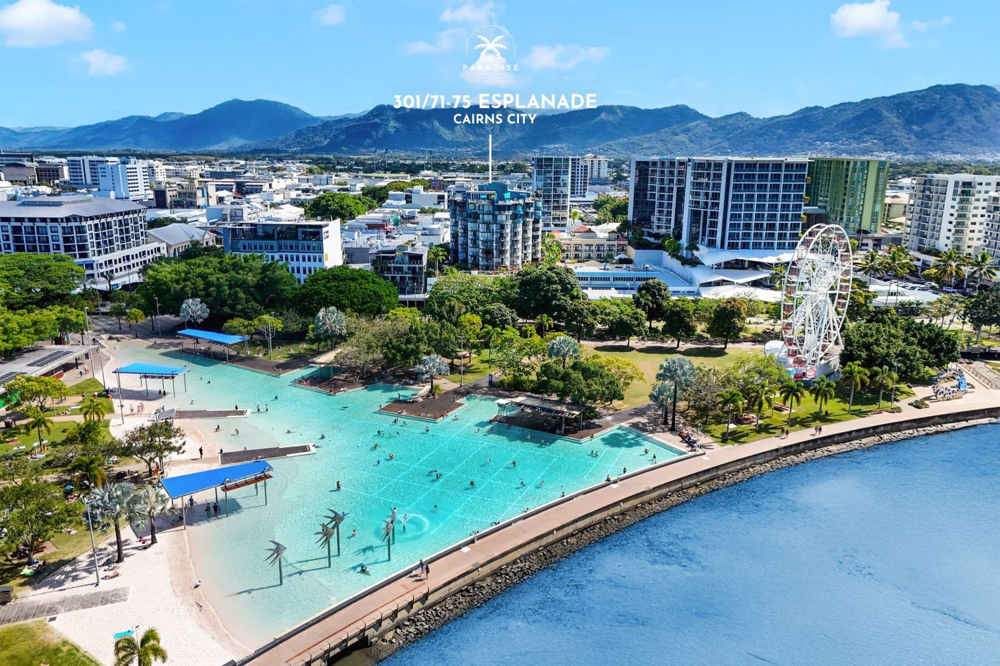
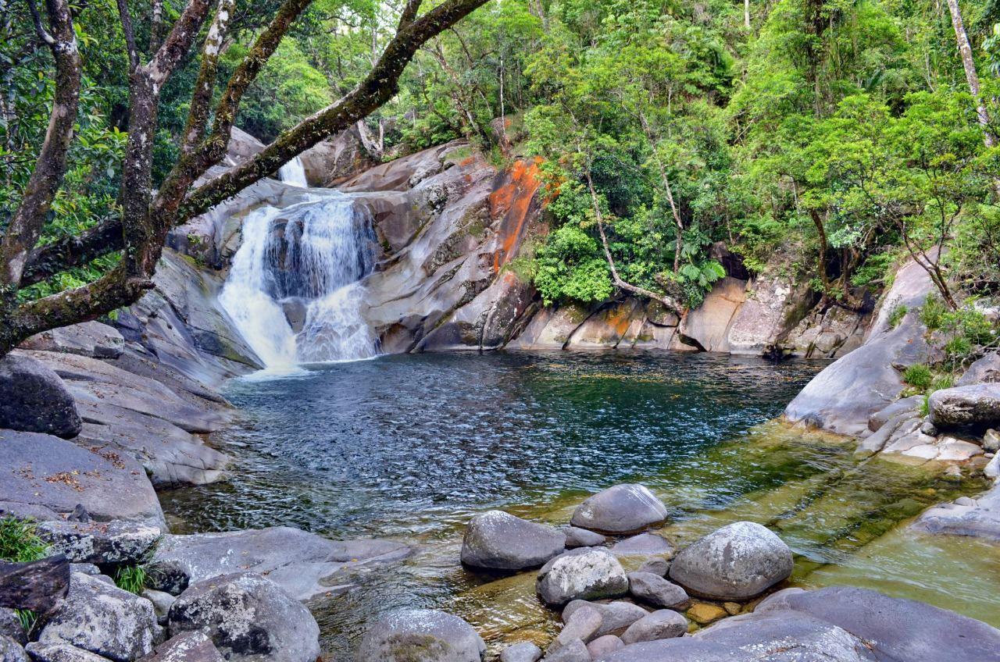
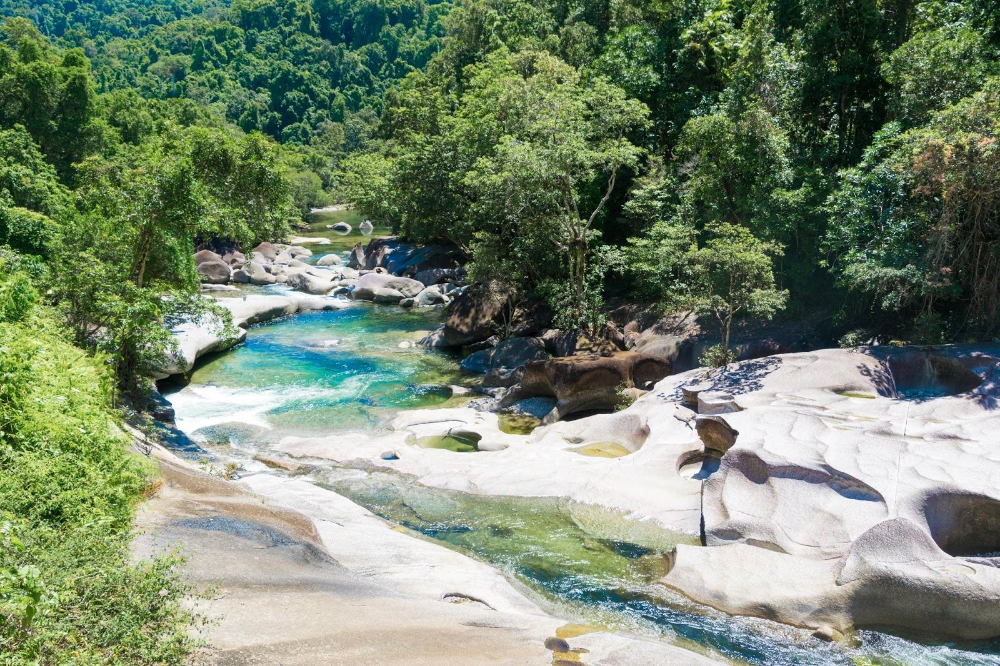
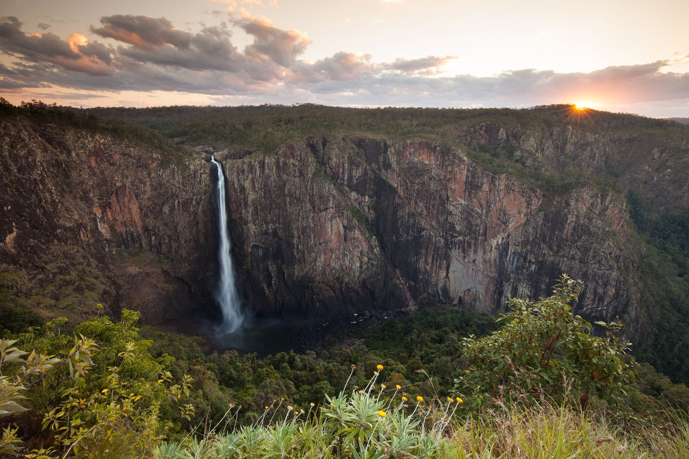
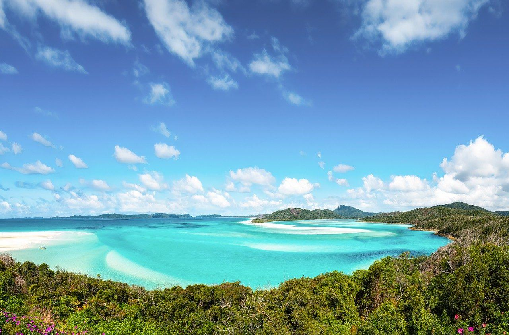
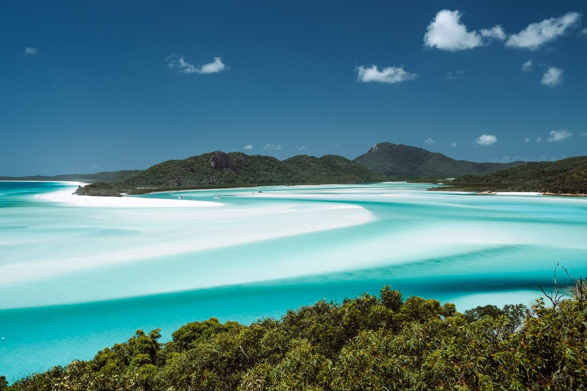
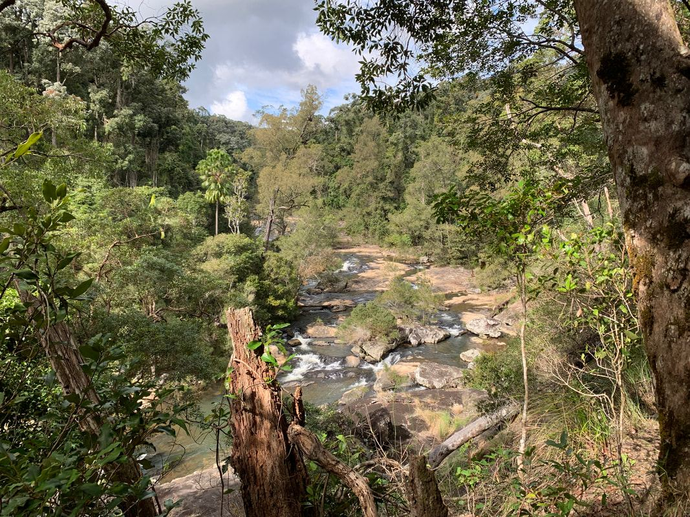
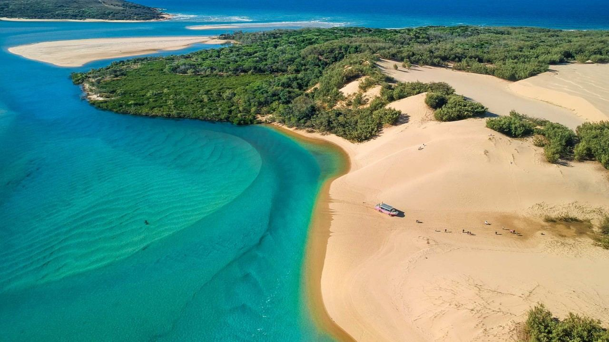
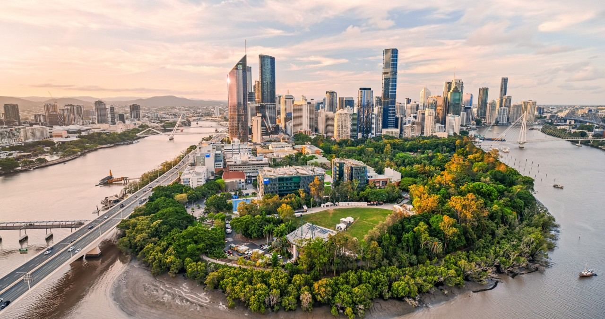

Landing the night before pickup turned out cheaper than a same-day connection once flight prices were compared — so we fly in a day early.
Mixed pace — some long driving days, three days where the van doesn't move at all. Order follows the highway south.









Cheapest of the airline direct or Trip.com, no third-party resellers. Van quote is JUCY's actual price.
Fuel, food, and campsites — paid as you go, not part of the upfront booking.
Booking costs plus on-road costs, per person and for the group. Optional add-ons (scenic flight, dive, Whitehaven sailing) are extra.
These dates fall inside QLD school holidays — vans, reef tours and flights all get pricier and sell out closer to the date.
No boat tour booked in by default — reef time is now optional (Whitsundays scenic flight, SS Yongala dive) so nobody's stuck on a touristy pontoon trip they didn't want.
Self-catering is the single biggest saving vs. eating out. The Sunseeker comes with a kitchen kit and gas cartridges.
Use WikiCamps or CamperMate to find free/cheap overnight spots — mix them with a few powered caravan park nights.